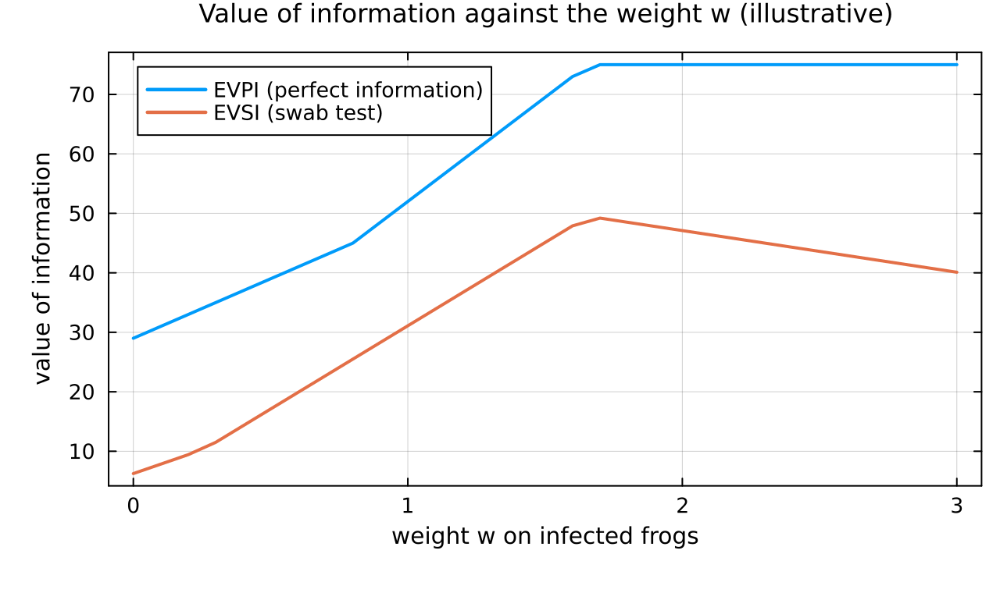

Experiments and the value of sample information
Simon Frost
- Motivation
- The problem
- An experiment is a likelihood
- Bayes’ rule
- Acting on the result
- The value of sample information
- How the value depends on the weight
- Information that is worth nothing
- Net benefit, only where the cost is additive
- What to take away
- Next
Motivation
Perfect information is a ceiling. What a manager can actually buy is a survey or a diagnostic test: something whose result depends on the state but does not reveal it. This vignette describes such a source of information as a likelihood, updates the belief on its result with Bayes’ rule, and computes the expected value of sample information (EVSI): how many more individuals the manager can expect by seeing the result before choosing. It also shows that information can be worth exactly nothing, and when a cost of sampling may be subtracted.
The problem
A pond holds a population of frogs. The chytrid fungus Batrachochytrium dendrobatidis (Bd) may be present. The manager can do nothing, treat the frogs with antifungal baths, or drain and disinfect the pond while the frogs are held in tanks. The state is the status of Bd in the pond: absent, present at low prevalence, or present at high prevalence.
For an infectious disease the outcome has two parts, both counted in individuals two years from now:
- the number of uninfected frogs alive (more is better);
- the number of infected frogs alive (fewer is better).
They are combined as
utility = uninfected − w × infected,
where the weight w says how much an infected frog counts against the population.
Do infected but living frogs count towards the population? In this series they do not. Only uninfected frogs are counted as population. With w = 0 infected frogs are ignored altogether: they add nothing and subtract nothing. With w = 1 each infected frog cancels one uninfected frog, on the argument that it is a source of infection for others. A total head count of living frogs, infected or not, would correspond to w = −1 and is not used. Results are shown for w = 0 and w = 1, and as a sweep over w.
All numbers are illustrative, not data and not estimates for any real pond or test.
using DecisionAnalysis
include(joinpath("..", "_common.jl"))
using Plots
actions = [:no_intervention, :antifungal_baths, :disinfect_pond]
states = [:absent, :low_prevalence, :high_prevalence]
uninfected = PayoffTable(actions, states,
[500 300 100 # no intervention
470 380 250 # baths: some handling losses, fewer infections
350 340 320]) # disinfection: heavy losses, Bd nearly removed
infected = PayoffTable(actions, states,
[0 150 250
0 60 120
0 10 20])
uninfectedPayoffTable{Int64}: 3 actions × 3 states
| action | absent | low_prevalence | high_prevalence |
|---|---|---|---|
no_intervention | 500 | 300 | 100 |
antifungal_baths | 470 | 380 | 250 |
disinfect_pond | 350 | 340 | 320 |
infectedPayoffTable{Int64}: 3 actions × 3 states
| action | absent | low_prevalence | high_prevalence |
|---|---|---|---|
no_intervention | 0 | 150 | 250 |
antifungal_baths | 0 | 60 | 120 |
disinfect_pond | 0 | 10 | 20 |
The belief is that Bd is absent with probability 1/2, at low prevalence with 3/10 and at high prevalence with 1/5 (illustrative). A small function builds the problem for a given w, with no intervention as the baseline.
prior = FiniteBelief(states, [1 // 2, 3 // 10, 1 // 5])
function bd_problem(w)
return DecisionProblem(infection_payoff(; uninfected, infected, weight=w), prior;
baseline=:no_intervention)
end
md_table(["action", "expected utility, w = 0", "gain over no intervention, w = 0",
"expected utility, w = 1", "gain over no intervention, w = 1"],
[[a, u0, g0, u1, g1]
for (a, u0, g0, u1, g1) in zip(actions,
aggregate(Expectation(), bd_problem(0)),
expected_gain_over_baseline(bd_problem(0)),
aggregate(Expectation(), bd_problem(1)),
expected_gain_over_baseline(bd_problem(1)))])| action | expected utility, w = 0 | gain over no intervention, w = 0 | expected utility, w = 1 | gain over no intervention, w = 1 |
|---|---|---|---|---|
no_intervention | 360 | 0 | 265 | 0 |
antifungal_baths | 399 | 39 | 357 | 92 |
disinfect_pond | 341 | -19 | 334 | 69 |
Without further information the baths are the best action at both weights. At w = 0 disinfection is worse than doing nothing, because its handling losses are not offset by anything that is counted. At w = 1 it is better than doing nothing, because the infected frogs it prevents now count.
An experiment is a likelihood
The manager can swab a sample of frogs and test the swabs for Bd by qPCR. The result is a signal, negative or positive. What makes it informative is that its probability depends on the state. An Experiment holds that dependence as a matrix L[z, θ] = P(signal z | state θ), with rows for signals and columns for states, so every column sums to one.
swab = Experiment([19//20 2//5 1//20 # P(negative | state)
1//20 3//5 19//20]; # P(positive | state)
signals=[:negative, :positive], states=states)
labelled_table("P(signal given state)", signal_labels(swab), states, swab.likelihood;
digits=2)| P(signal given state) | absent | low_prevalence | high_prevalence |
|---|---|---|---|
negative | 0.95 | 0.4 | 0.05 |
positive | 0.05 | 0.6 | 0.95 |
The test rarely gives a false positive (1 in 20 when Bd is absent), nearly always detects a high prevalence, and misses a low prevalence two times in five because few of the sampled frogs are infected.
Bayes’ rule
bayes_invert combines the prior and the likelihood. It returns the probability of each signal and the belief about the state after each signal.
inversion = bayes_invert(prior, swab)
md_table(vcat("signal", "probability of signal", ["P($(s) given signal)" for s in states]),
[vcat(z, m, probabilities(post))
for (z, m, post) in zip(inversion.signals, inversion.marginal,
inversion.posteriors)]; digits=3)| signal | probability of signal | P(absent given signal) | P(low_prevalence given signal) | P(high_prevalence given signal) |
|---|---|---|---|---|
negative | 0.605 | 0.785 | 0.198 | 0.017 |
positive | 0.395 | 0.063 | 0.456 | 0.481 |
A negative result raises the probability that Bd is absent from 0.5 to about 0.79. A positive result nearly rules absence out. The table of joint probabilities p(θ) × L[z, θ] is in inversion.joint.
A signal that has probability zero has no posterior, and bayes_invert returns nothing for it. It never invents one.
Acting on the result
The manager’s best action after each signal is the expected-utility choice under the posterior belief.
function choice_after(w, posterior)
after = DecisionProblem(bd_problem(w).payoff, posterior; baseline=:no_intervention)
return first_choice(decide(after, MaxExpectedUtility()))
end
md_table(["signal", "best action, w = 0", "best action, w = 1"],
[[z, choice_after(0, post), choice_after(1, post)]
for (z, post) in zip(inversion.signals, inversion.posteriors)])| signal | best action, w = 0 | best action, w = 1 |
|---|---|---|
negative | no_intervention | antifungal_baths |
positive | disinfect_pond | disinfect_pond |
At w = 0 a negative swab means doing nothing and a positive swab means disinfecting: the test moves the manager away from the baths in both directions. At w = 1 the baths remain the choice after a negative swab.
The value of sample information
value_with_information is the expected utility of the plan “look at the signal, then take the best action for it”. evsi is that value minus the value of acting now, and evpi is the ceiling.
md_table(["w", "act now", "act after the swab", "EVSI", "EVPI", "EVSI as a share of EVPI"],
[[w, act_now_value(bd_problem(w)), value_with_information(bd_problem(w), swab),
evsi(bd_problem(w), swab), evpi(bd_problem(w)),
evsi(bd_problem(w), swab) / evpi(bd_problem(w))] for w in (0, 1)])| w | act now | act after the swab | EVSI | EVPI | EVSI as a share of EVPI |
|---|---|---|---|---|---|
| 0 | 399 | 405.25 | 6.25 | 29 | 0.22 |
| 1 | 357 | 388.1 | 31.1 | 52 | 0.6 |
The unit of EVSI is the unit of the payoff. At w = 0 the swab is worth 6.25 uninfected frogs in expectation. At w = 1 it is worth 31.1 units of uninfected-minus-infected frogs. EVSI is never negative under a single prior and never exceeds EVPI.
The package computes the value in joint form, the sum over signals of the best action’s joint expected payoff, without dividing by the probability of a signal. The posterior route gives the same number:
function value_by_posteriors(w)
return sum(m * act_now_value(DecisionProblem(bd_problem(w).payoff, post))
for (m, post) in zip(inversion.marginal, inversion.posteriors))
end
value_by_posteriors(1) == value_with_information(bd_problem(1), swab)trueHow the value depends on the weight
ws = 0:(1 // 10):3
plt = plot(Float64.(ws),
[Float64[evpi(bd_problem(w)) for w in ws] Float64[evsi(bd_problem(w), swab)
for w in ws]];
label=["EVPI (perfect information)" "EVSI (swab test)"],
xlabel="weight w on infected frogs", ylabel="value of information",
title="Value of information against the weight w (illustrative)",
legend=:topleft)
png_figure(plt)
The value of the test changes with what is being valued. The kinks are the weights at which the best action for some signal changes.
Information that is worth nothing
Information has value only through the actions it changes. Two cases give exactly zero.
The first is a test whose result does not depend on the state.
uninformative = Experiment([1//2 1//2 1//2; 1//2 1//2 1//2]; states=states)
evsi(bd_problem(0), uninformative), evsi(bd_problem(1), uninformative)(0//1, 0//1)The second is more instructive: a test that is informative, but not informative enough to move the decision. A rapid field kit separates the states less sharply than the swab.
field_kit = Experiment([17//20 1//2 1//4; 3//20 1//2 3//4];
signals=[:negative, :positive], states=states)
kit = bayes_invert(prior, field_kit)
md_table(["signal", "P(absent given signal)", "best action, w = 0", "best action, w = 1"],
[[z, probabilities(post)[1], choice_after(0, post), choice_after(1, post)]
for (z, post) in zip(kit.signals, kit.posteriors)]; digits=3)| signal | P(absent given signal) | best action, w = 0 | best action, w = 1 |
|---|---|---|---|
negative | 0.68 | antifungal_baths | antifungal_baths |
positive | 0.2 | antifungal_baths | disinfect_pond |
evsi(bd_problem(0), field_kit), evsi(bd_problem(1), field_kit)(0//1, 18//1)At w = 0 the kit changes the belief but both results lead to the baths, which is what the manager would do anyway, so the kit is worth nothing. At w = 1 a positive result leads to disinfection and the same kit has a positive value. Whether information is worth collecting depends on the decision it serves.
information_can_change_decision asks that question directly. It is true exactly when no single action is best after every result that can occur, and that is exactly when the EVSI is positive. It does not compute the EVSI.
md_table(["test", "can change the decision, w = 0", "can change the decision, w = 1"],
[[name, information_can_change_decision(bd_problem(0), e),
information_can_change_decision(bd_problem(1), e)]
for (name, e) in ["swab" => swab, "field kit" => field_kit,
"uninformative" => uninformative]])| test | can change the decision, w = 0 | can change the decision, w = 1 |
|---|---|---|
| swab | yes | yes |
| field kit | - | yes |
| uninformative | - | - |
Net benefit, only where the cost is additive
enbs subtracts the cost of an experiment from its EVSI. That subtraction is only meaningful when the cost is in the same unit as the payoff and reduces every payoff by the same amount whatever the action and the state. There is no money in this series, so a cost has to be a cost in individuals.
Swabbing is not lethal, and its cost in frogs is taken as zero. A histological examination is lethal. Suppose it has the same likelihood as the swab and needs 12 frogs, and suppose each of those frogs would otherwise have been counted as one uninfected frog at the end, under every action and in every state. Under that assumption, which is a simplification, the cost is additive.
histology = Experiment(swab.likelihood; signals=signal_labels(swab), states=states,
cost=12)
md_table(["w", "EVSI", "cost in frogs", "expected net benefit"],
[[w, evsi(bd_problem(w), histology), histology.cost,
enbs(bd_problem(w), histology)] for w in (0, 1)])| w | EVSI | cost in frogs | expected net benefit |
|---|---|---|---|
| 0 | 6.25 | 12 | -5.75 |
| 1 | 31.1 | 12 | 19.1 |
At w = 0 the lethal test costs more frogs than its information saves, and the net benefit is negative: do not run it. At w = 1 it is worth running. If the sampled frogs would have had different fates under different actions or states, the cost would not be additive. The sampling would then have to enter the payoff table itself, as separate actions “sample, then act”, and enbs would not apply.
What to take away
- An
Experimentis a likelihood matrixL[z, θ], rows for signals and columns for states, each column summing to one. bayes_invertgives the probability of each signal and the posterior belief after it.evsi(problem, experiment)is the expected gain from seeing the signal before choosing, in the unit of the payoff. It lies between zero andevpi(problem).- Information is worth nothing when no result would change the action, however much it changes the belief.
information_can_change_decisionchecks this, and is equivalent to a positive EVSI. infection_payoff(; uninfected, infected, weight)builds the utility uninfected − weight × infected from the two tables of counts.- For a disease, the value of a test depends on the weight
wgiven to infected animals. Report it atw = 0andw = 1at least. enbssubtracts a cost only when that cost is additive in the payoff. Here costs are individuals removed by sampling, never money.
Next
A test is one way of learning part of the truth. Another is to learn one component of the state exactly. Partial information asks which uncertainty is worth resolving.